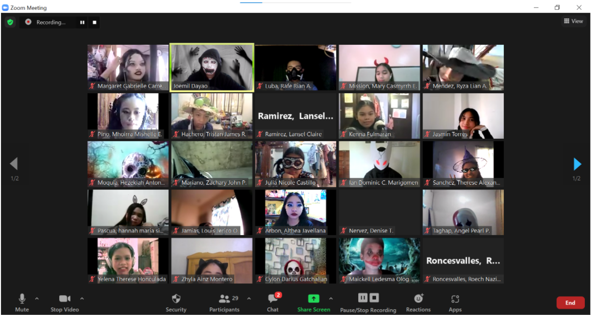

REFLECTION: "My Online Class Journey"
Due to the current world health crisis, many Filipino students are compelled to engage in Massive Open Online Course (MOOC) in order to continue with their studies, and the concept of ubiquitous learning (that is, learning anywhere, everywhere, anytime and every time) has been realized sooner than expected for many. As a student engaged in online learning, I would like you to reflect on your current situation as a learner. Write about the challenges you encounter every day, the funny moments you experienced, and personal suggestions as to how the learning process can be improved. You may also take a picture of your study room or take a screenshot of fun moments with your classmates etc.
During my elementary years, I used to be in a face to face classes just like the other learners who went to school from Mondays to Fridays. But since last school year, due to CoVID-19 pandemic, everything changed. The face to face classes which I expected to happen in my High School life was not realized. By then, our online classes in Grade 7 started. I had already knowledge on how to operate laptops, ideas about the internet but in online class, I was such a newbie in it during that time. There were times that I was confused on how to join in our class. Sometimes, I cannot find the activities being sent by our teachers. And the worst thing was, we had a poor internet connection in our house wherein I could hardly hear my teacher's discussion. In that case, I had to go to my grandma's house in the next town so that I can have a good internet access. Not only the classes were through online but also all the reports, outputs, exams and many more are online until this time, so I should always be infront of my laptop complying all those things that sometimes my eyes are already complaining even if I already used my anti-radiation eye glasses. These are just some of the challenges I encountered during online classes. But these challenges made me more creative, patient, eager to learn new things and a lot more. These also push me to continue even if there were problems along the way just to finish my studies and have a brighter future someday. This pandemic taught me that life maybe so hard sometimes but we just have to go with the flow. We just have to dance with the music whatever it is. This pandemic cannot stop everyone of us to reach our ambitions in life. All thanks to the Department of Education for these online classes and to all teachers who did their best to teach using the new normal way of delivering the lessons which is supposedly be delivered in a real classroom setting.
